Sviluppato da:
Giovanni Antonio Gallina & Fortunato Pacenza
(Utilizza i tasti direzionali ➡️ e ⬇️ per navigare l'architettura. Premi Alt+Clic per zoomare)
Nel mondo reale, i file memorizzati su disco rigido sono esposti a manomissioni arbitrarie o corruzioni strutturali.
Il nostro ecosistema applica il paradigma di isolamento Zero-Trust Architecture. All'avvio del file main(), prima di esporre qualsivoglia interfaccia utente, viene invocata la routine di Audit di Sicurezza eseguiControlloIntegrita() per validare la coerenza dei dati caricati in Memoria.
Se il database testuale non ha subito alterazioni esterne (la funzione confronta gli utenti e i rispettivi saldi), l'interfaccia si sblocca istantaneamente restituendo un hash coincidente.
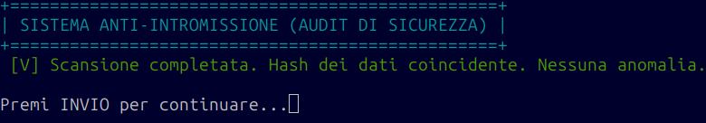
Se un malintenzionato altera i saldi o inietta utenti "fantasma" all'interno del file di testo in chiaro, l'algoritmo intercetta la discrepanza strutturale, isola le min threats in Memoria e segnala l'intrusione all'operatore.
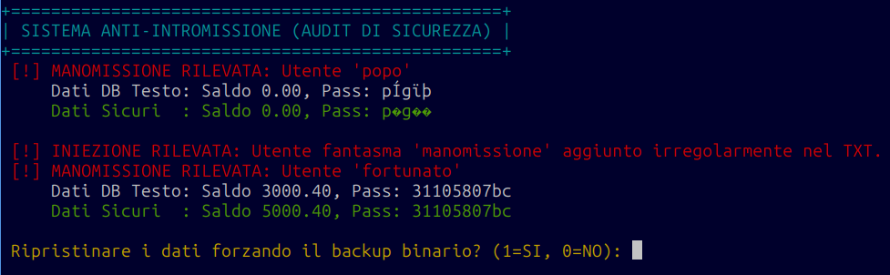
Se l'operatore decide di non ripristinare i dati digitando 0, il sistema emette un warning critico permanente. Il software continuerà a girare in uno stato instabile e compromesso.
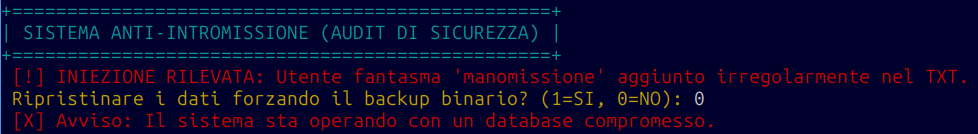
Selezionando l'opzione 1, il software esegue il ripristino. Sfrutta i record a dimensionamento fisso del file binario per sovrascrivere i blocchi corrotti in RAM e purificare istantaneamente il database testuale.
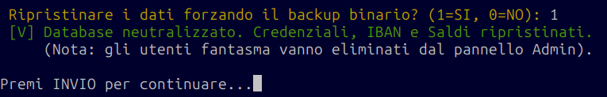
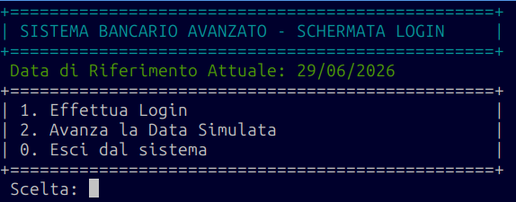
Involucro e Hashing: L'acquisizione delle credenziali è affidata alla leggiStringa(), implementata per azzerare il rischio di Buffer Overflow troncando il terminatore \n. La password inserita viene data in pasto a generaHash() (algoritmo djb2) e convertita in stringa esadecimale prima del match.
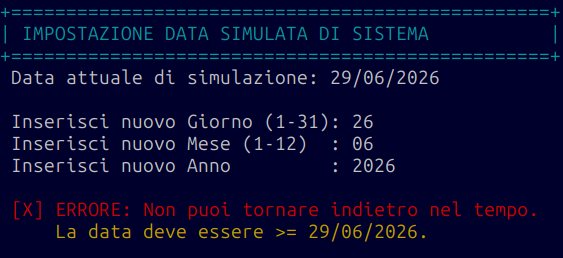
Compressione in DataGrezza: La funzione impostaDataSimulata() comprime l'anagrafica del calendario in un intero puro tramite la formula Anno * 10000 + Mese * 100 + Giorno. Se la nuova data grezza è minore di quella attuale, viene rilevato un "viaggio nel passato" e quindi l'input non viene convalidato.
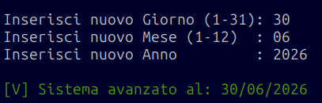
Quando la data immessa è cronologicamente valida, il sistema aggiorna la variabile globale di stato dataSimulata. Questo sblocca lo scorrimento del tempo necessario per processare i movimenti programmati e calcolare le code di compensazione dei bonifici.
L'Amministratore è il cuore gestionale del sistema. Dispone di poteri operativi radiali su tutta la memoria, potendo ispezionare, alterare o recidere i nodi delle liste (eliminare utenti, transazioni, movimenti).
Tuttavia, per impedire l'introduzione di dati incoerenti, ogni singola funzione di inserimento o modifica è sottoposta a vincoli architetturali rigidi: costrizioni sintattiche tramite Espressioni Regolari REGEX, smaltimento asincrono in code FIFO e persistenza dei record fisici strutturati ad accesso casuale.
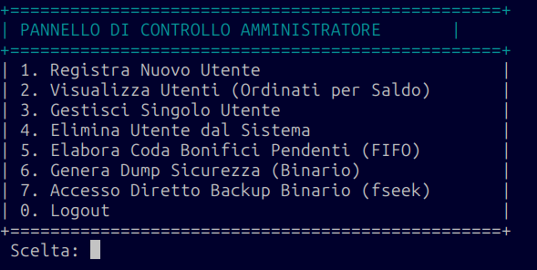
Il punto di instradamento principale per la supervisione. Da questo loop l'operatore può deviare l'esecuzione del software verso i moduli di creazione, gestione e manipolazione o i canali di persistenza I/O.
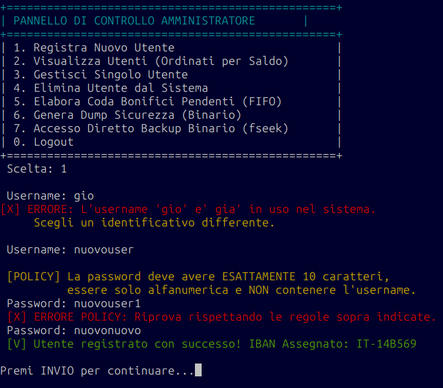
Analisi delle Sotto-Logiche: Prima esegue una ricerca ricorsiva tramite cercaUtentePerUsername() per evitare collisioni di chiavi primarie. Successivamente, la password viene posta sotto esame dal motore validaPassword(): se viola il pattern alfanumerico di 10 caratteri o contiene l'username, viene rifiutata, altrimenti viene trasformata in Hash djb2. L'IBAN viene autogenerato in esadecimale e validato via Regex.
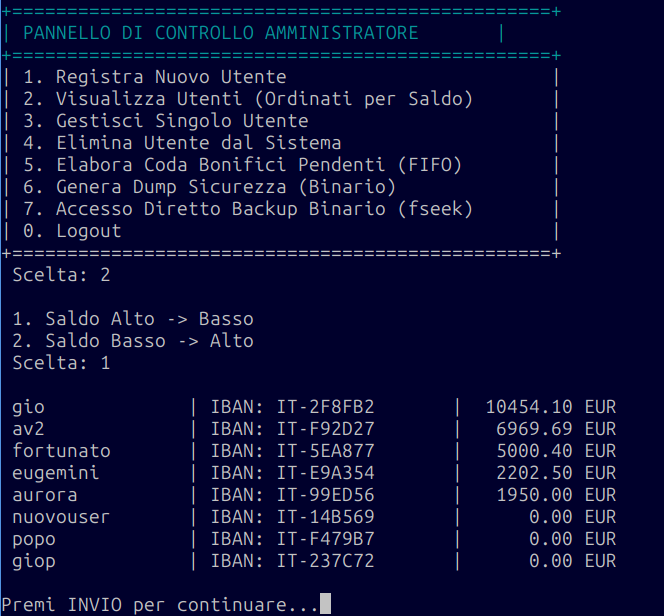
Bubble Sort su Liste Concatenate: La selezione richiama la funzione ordinaUtenti(). L'algoritmo ordina i nodi master della RAM scambiando le informazioni interne in base al patrimonio memorizzato nel tipo `double`. Questo permette all'Amministratore di isolare istantaneamente i conti con saldi elevati o in passività.
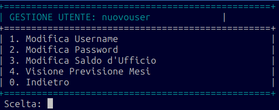
Rintracciato il record dell'utente in RAM, l'Admin accede a un sottomenu isolato che lavora per indirizzo di memoria, consentendo l'aggiornamento d'ufficio di credenziali, saldi o la visualizzazione di report previsionali dedicati.
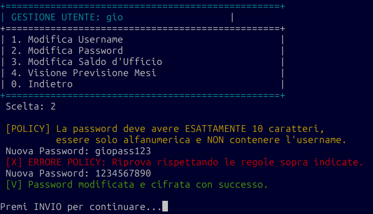
Enforcement delle Regole: Anche la modifica d'ufficio è protetta dallo scudo crittografico. Se l'operatore tenta di inserire una stringa non conforme (es. giopass123 che contiene l'username "gio"), la funzione validaPassword() innesca il fallimento strutturale, richiedendo un pattern puramente alfanumerico di 10 caratteri.
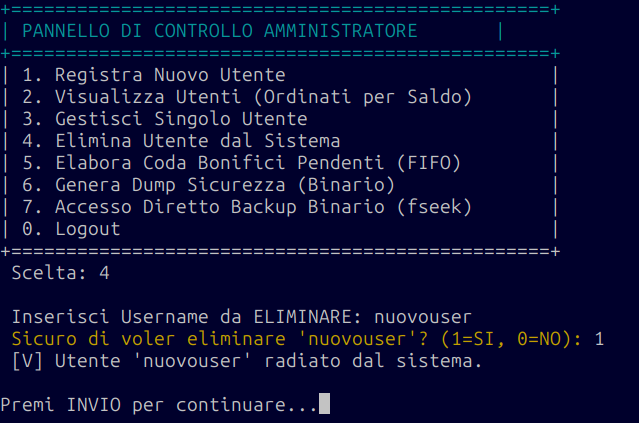
Garbage Collection Chirurgica: La funzione eliminaUtente() effettua lo sgancio dei puntatori della lista master (prev->next = curr->next). Onde evitare la creazione di nodi orfani in RAM, la funzione scende in profondità e dealloca preventivamente tutte le transazioni storiche, i movimenti programmati e la pila notifiche, azzerando i Memory Leaks.
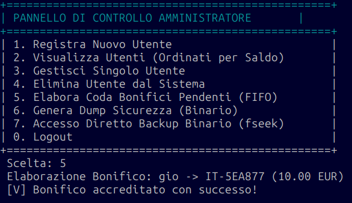
Logica di Smaltimento: I bonifici esterni effettuati dai clienti non toccano subito il destinatario, ma rimangono "congelati" in una coda asincrona. L'Admin, premendo l'opzione 5, innesca la elaboraCodaBonifici(): estrae gli elementi dalla testa della coda rispettando il principio First-In-First-Out, aggiorna i saldi reali e invia le notifiche telematiche.
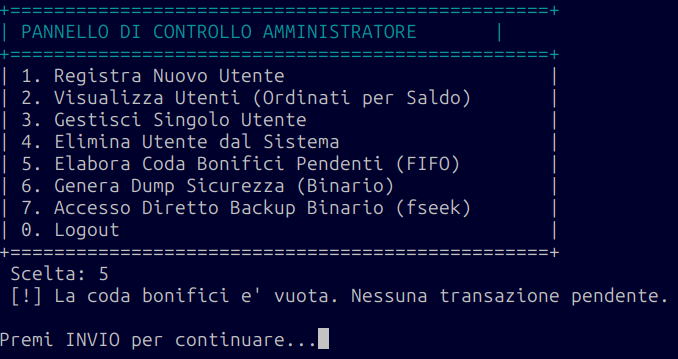
Se la coda non contiene nodi pendenti (front == NULL), l'algoritmo intercetta immediatamente lo stato vuoto tramite una clausola di guardia, impedendo tentativi di dereferenziazione errati e stampando un log pulito.
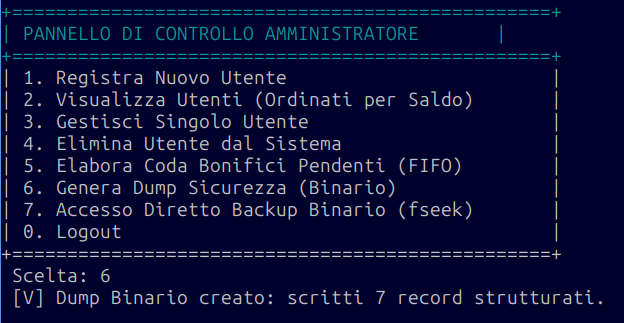
La routine salvaBackupBinario() traduce i dati volatili presenti in RAM in blocchi di byte strutturati e non manipolabili, scrivendoli sul disco fisso tramite la funzione nativa fwrite() con modalità di apertura stream "wb".
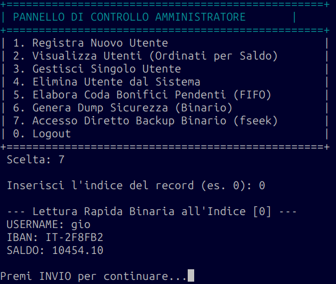
Complessità Costante O(1): A differenza dei file di testo (che impongono una scansione sequenziale riga per riga), la funzione esploraBackupBinarioConFseek() calcola matematicamente l'offset in byte moltiplicando l'indice desiderato per la dimensionamento fissa della struct. Sposta il cursore hardware tramite fseek() ed estrae i dati in un colpo solo.
Se il modulo dell'Amministratore rappresenta la cabina di regia del sistema, il Menu Utente incarna la Dashboard Operativa Finale. Questo modulo espone al cliente un'interfaccia interattiva per la gestione quotidiana del proprio patrimonio.
Le transazioni ordinarie (Ricariche e Prelievi) lavorano istantaneamente sui saldi, I trasferimenti istantanei (P2P)e Bonfici Programmati, integrano controlli di Pointer Aliasing, mentre i canali di notifica si poggiano su strutture regolate dal principio LIFO.
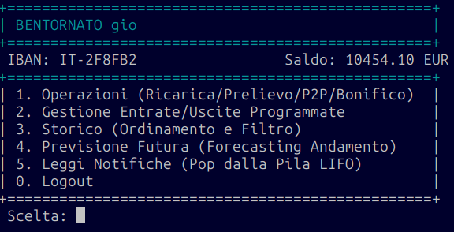
Adattamento Dinamico del Flusso: Al momento del login, la funzione controlla lo stato del saldo. Se l'utente si trova in una condizione di passività (saldo < 0), il software dirotta forzatamente l'esecuzione verso il menuUtenteInRosso(), congelando ogni operatività in uscita e sbloccando le funzioni standard solo dopo un deposito di ripianamento.
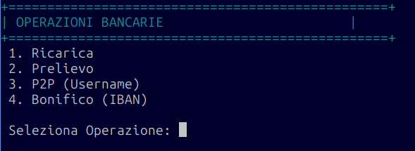
L'opzione 1 del menu principale apre questo sotto-pannello di reindirizzamento operativo. Da qui l'utente convoglia la sua intenzione verso quattro canali alternativi, ciascuno agganciato a specifiche clausole matematiche di validazione.
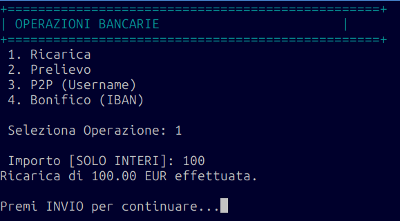
Allocazione Dinamica in O(1): La funzione effettuaRicarica() acquisisce l'importo tramite il wrapper sicuro leggiIntero(). Incrementa direttamente la variabile reale del saldo ed esegue un inserimento in Testa dello storico movimenti allocando un nuovo nodo con la `malloc()`, operando a costo computazionale costante.
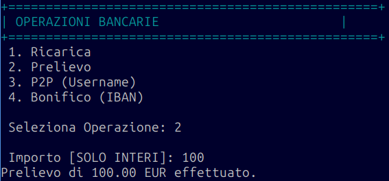
Quando l'utente richiede un prelievo monetario, la funzione effettuaPrelievo() interroga preventivamente la clausola di guardia verificaDisponibilita(). Se i fondi sono capienti, l'importo viene decurtato e viene inserito il record in testa allo storico.
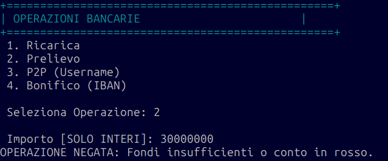
Clausola di Guardia Attiva: Se l'ammontare immesso spingerebbe il conto al di sotto dello sbarramento dello zero, la macro verificaDisponibilita() fallisce restituendo false. Il sistema interrompe radialmente l'aggiornamento della RAM, bloccando l'estrazione illecita e notificando lo stato di insufficienza fondi.
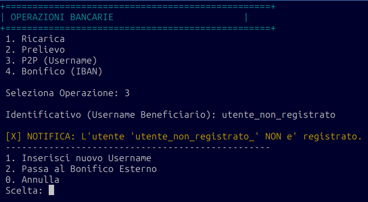
Logica di Fallback: Il sistema esegue una ricerca sequenziale ricorsiva in RAM cercandone la corrispondenza. Se cercaUtentePerUsername() == NULL, scatta un menu di emergency a tre rami che permette al cliente di riprovare, convertire l'azione in un bonifico esterno o abortire senza bloccare l'applicativo.
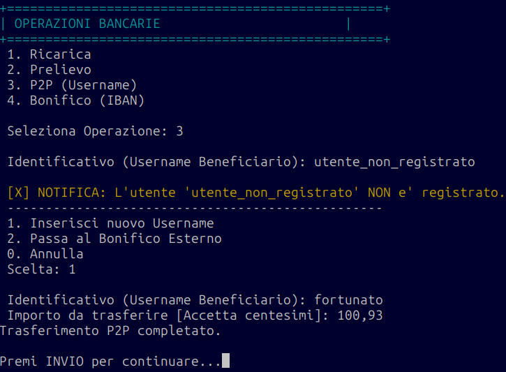
Pointer Aliasing & Notifiche LIFO: Rintracciato l'indirizzo di memoria del destinatario, un check impedisce il crash se mittente == beneficiario. Successivamente l'algoritmo altera in modo atomico e sincronizzato i due saldi reali, istanzia due transazioni e inietta due avvisi speculari nelle rispettive Pile LIFO.
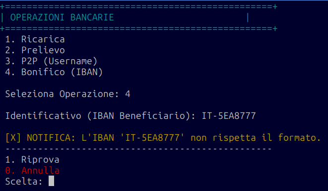
Pattern Matching Attivo: Quando l'utente inserisce la stringa identificativa del beneficiario, questa viene intercettata dalla funzione validaIBAN(). Se non rispetta l'espressione regolare POSIX ^IT-[0-9A-F]{6}$, il sistema blocca il flusso operazione, notifica l'errore e attiva il sottomenu di ripristino o annullamento.
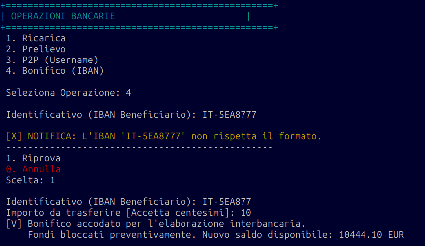
Pre-Autorizzazione e Accodamento: Se la stringa supera la Regex, l'importo viene decurtato istantaneamente dal conto del cliente ("Fondi Congelati"). I dati vengono incapsulati in un nuovo elemento e inseriti all'interno di codaCentrale tramite la funzione enqueueBonifico(), rimanendo in attesa dell'approvazione asincrona dell'Admin.
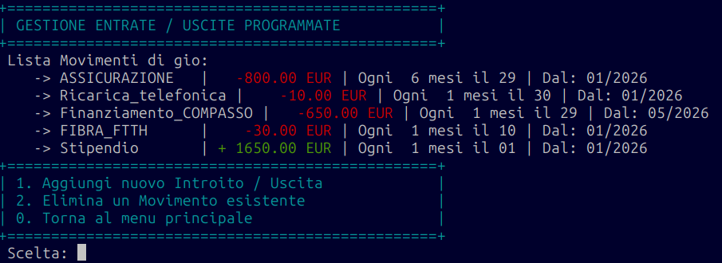
L'opzione 2 apre l'interfaccia dedicata ai flussi temporali ciclici. Il sistema stampa l'elenco dei movimenti ricorrenti attivi memorizzati in una lista collegata secondaria, elemento cardine per alimentarci i calcoli del Forecasting.
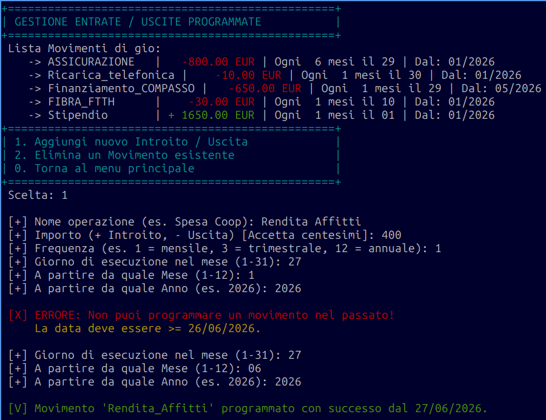
Clausole Calendariali: L'utente inserisce la descrizione, l'importo e la cadenza d'intervallo. Prima di procedere all'allocazione, il sistema comprime la data e verifica che l'inizio della programmazione non risieda nel passato rispetto a dataSimulata, rigettando tempestivamente l'anomalia.
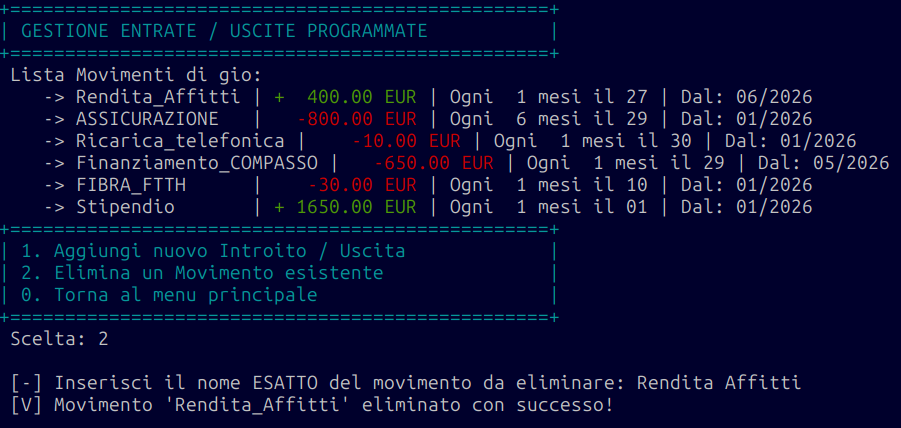
Sgancio Logico del Nodo: La selezione richiama la funzione eliminaMovimentoProgrammato(). Il sistema scansiona l'albero collegato cercando il match esatto della stringa descrittiva, sgancia il rispettivo nodo modificando i puntatori adiacenti e libera istantaneamente la memoria tramite free().
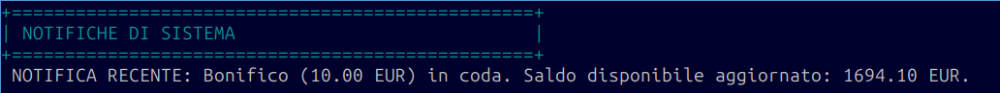
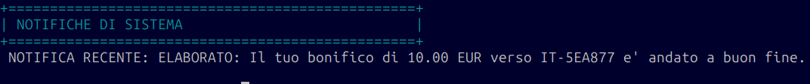
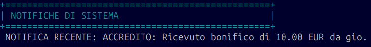
L'opzione 5 esegue il pop della pila notifiche. Rispettando il principio Last-In-First-Out, la popNotifica() estrae il messaggio più recente inserito nel vettore dinamico (come la prenotazione del bonifico, l'accredito elaborato dall'Admin o la ricezione di fondi), lo mostra a video e lo distrugge definitivamente.
La memorizzazione dei dati perde di significato se non viene affiancata da strumenti di estrazione analitica. Abbiamo dotato l'ecosistema di moduli avanzati per l'interpretazione dello storico e lo sviluppo di modelli predittivi.
Attraverso il Bubble Sort e l'applicazione dell'operatore matematico modulo "%", il software è in grado di organizzare cronologicamente gli estratti conto e di generare proiezioni finanziarie a lungo termine.
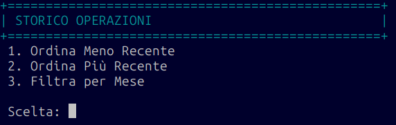
L'opzione 3 introduce i parametri di filtraggio estratti conto. Permette al cliente di impostare la direzione temporale di ordinamento o di circoscrivere lo scorrimento dei blocchi RAM ad un mese e anno specifici.
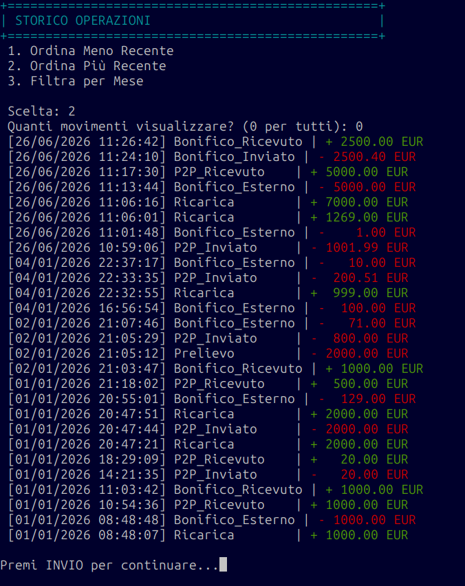
Complessità Caso Migliore O(N) e Colori ANSI: La funzione ordinaStorico() organizza i nodi via Bubble Sort, arrestandosi subito se il flag scambiato rimane a zero. In fase di stampa, la sottofunzione strstr() scansiona la descrizione: se individua parole come "Prelievo" o "Inviato", inietta dinamicamente il colore ANSI rosso, altrimenti applica il verde neon.
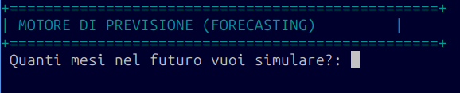
L'opzione 4 richiama il modulo di calcolo probabilistico. Il sistema richiede in input la profondità temporale del Fast-Forward in mesi, preparando la logica RAM per generare l'universo parallelo di simulazione finanziaria.
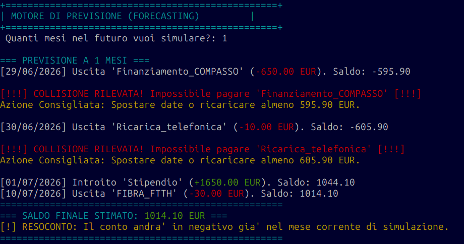
Isolamento Ingegneristico ed Algoritmo Modulo (%): La funzione generaPrevisione() clona il saldo in una variabile isolata saldoVirtuale per non alterare i dati reali. Calcola le scadenze cicliche con l'operatore (deltaMesi % m->intervalloMesi == 0). Se il saldo virtuale scende sotto lo zero, l'algoritmo calcola l'ammontare esatto della passività, segnala la collisione e suggerisce l'azione ripianatrice.
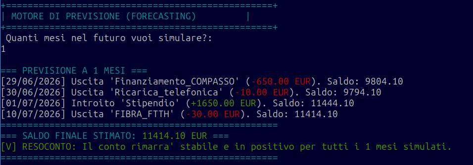
Se l'orizzonte temporale simulato si conclude senza mai mandare in passività il saldoVirtuale, l'algoritmo emette un resoconto positivo completo. Questo modulo dimostra l'efficacia delle liste concatenate secondarie nel processare filtri predittivi asincroni.
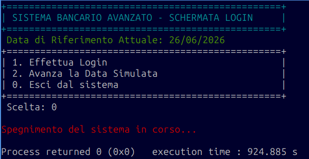
La selezione dell'opzione 0 interrompe il loop infinito dell'orchestratore, avviando la chiusura controllata dell'ambiente hardware.
Gestione di struct dinamiche (FIFO, LIFO), algoritmi di ordinamento ottimizzati e gestione integrata delle interfacce.
Architettura software basata sulla modularità, isolamento degli input contro attacchi di Buffer Overflow, crittografia irreversibile (djb2), convalida stringhe tramite Regex e audit di boot anti-manomissione.